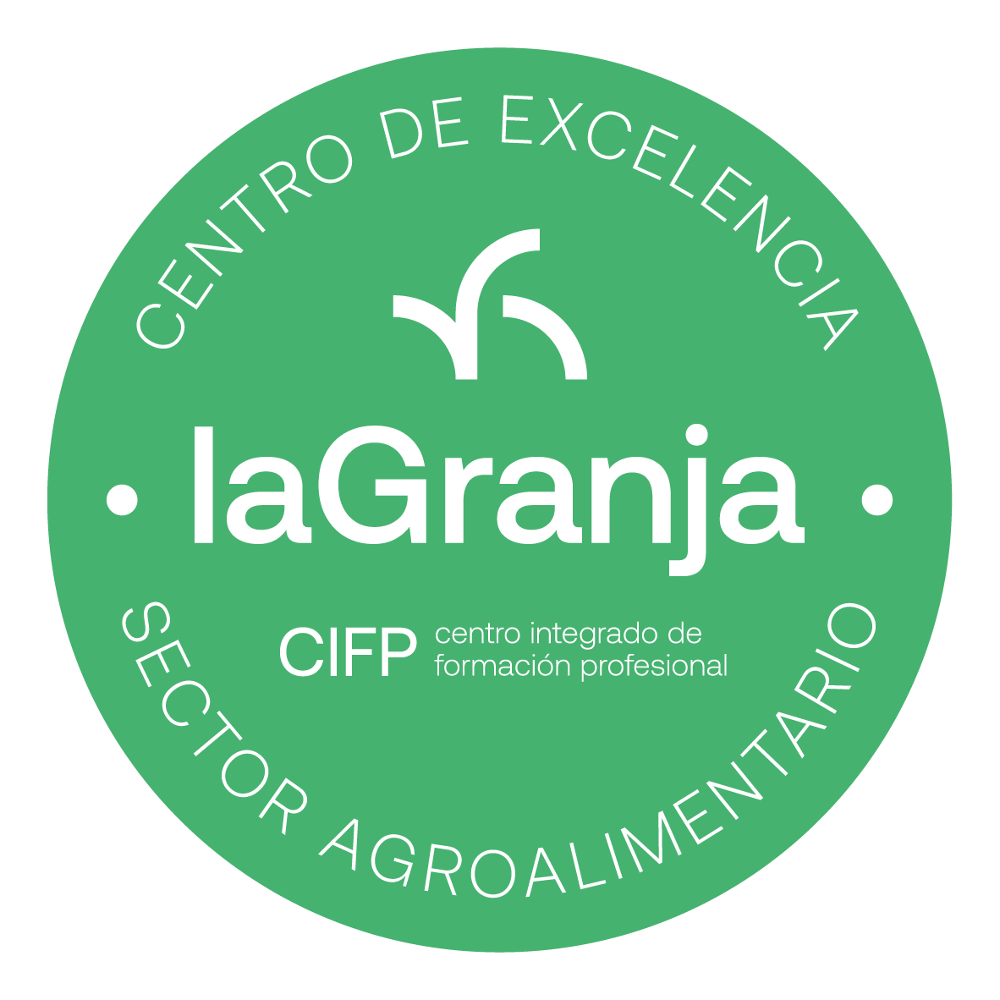

Noticiario La Granja
Actualidad de nuestras familias profesionales
Todas
Nacional
Cantabria
CIFP La Granja
Filtrar por Familia:
Todas las Familias
Agraria
Industrias Alimentarias
Transporte y Mantenimiento de Vehículos
Seguridad y Medio Ambiente